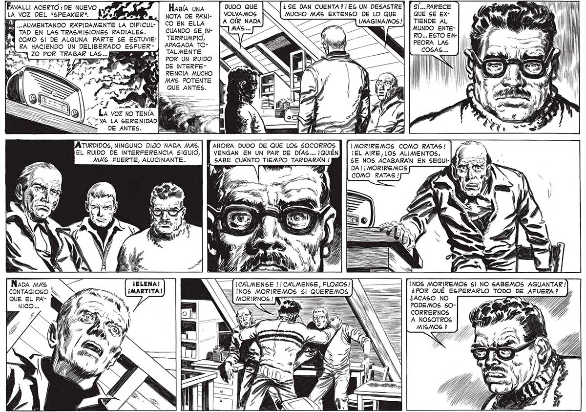

28 TAD EN LAS TRASMISIONES RADIALES. COMO 6l DE ALGUNA PARTE SE ESTUVIERA HACIENDO UN DELIBERADO ESFUERpá 7 54 e LA VOZ NO TENÍA “. "YA LA SERENIDAD S DE ANTES. B A TURDIDOS, NINGUNO DIJO NADA MAS. AHORA DUDO DE QUE LOS SOCORROS EL RUIDO DE INTERFERENCIA SIGUIO, VENGÁN EN UN PAR DE DIAS... ¡QUIEN HaBíA UNA DUDO QUE | O [¿SE DAN CUENTA? ¡ES UN DESASTRE] | SÍ... PARECE CO EN ELLA CUANDO SE INTERRUMPIO, APAGADA TOTALMENTE POR UN RUIDO DE INTERFERENCIA MUCHO MAS POTENTE QUE ANTES. MAS FUERTE, ALUCINANTE. CUANTO TIEMPO TARDARAN ! Nada mas ¡ELENA! CONTAGIOSO A MG Tu JMARTITA! QUE EL PAPF 4 ¡CALMENSE !¡CALMENSE, FLOJOS/ ¡NOS MORIREMOS 5! QUEREMOS E MOR IRNOS ! NS == ——— TIENDE AL MUNDO ENTE- Ni RO... ESTO EM-] ¡ $ PEORA LAS l "¡MORIREMOS COMO RATAS ! ¡EL AIRE,LOS ALIMENTOS, SE NOS ACABARÁN EN SEGUI- K DA ! ¡ MORIREMOS COMO RATAS! [NOS MORIREMOS Sl NO SABEMOS AGUANTAR ! ¿POR QUE ESPERARLO TODO DE AFUERA ? ¿ACASO NO PODEMOS S0OCORRERNOS A NOSOTROS MISMOS ?
